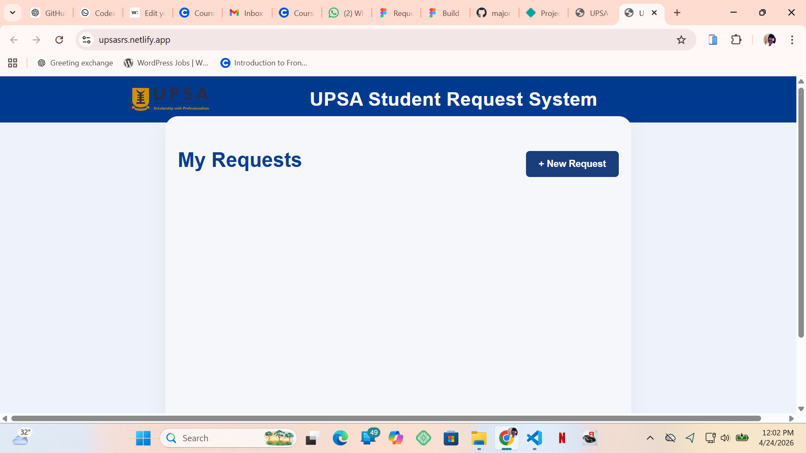
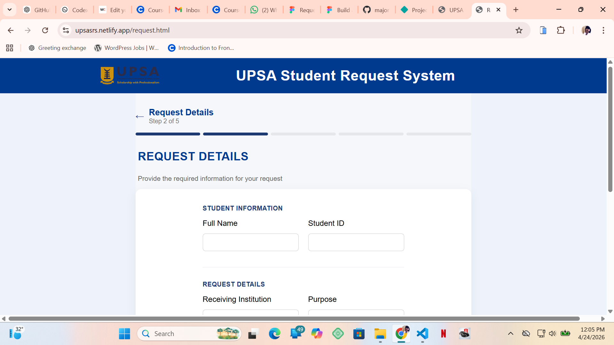
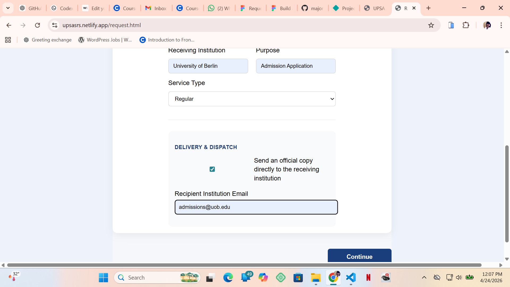
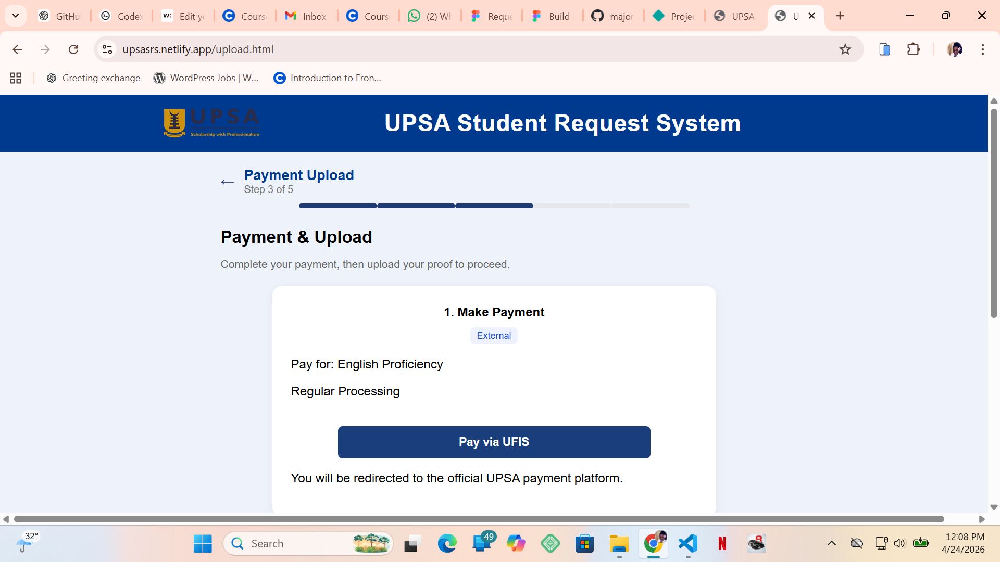
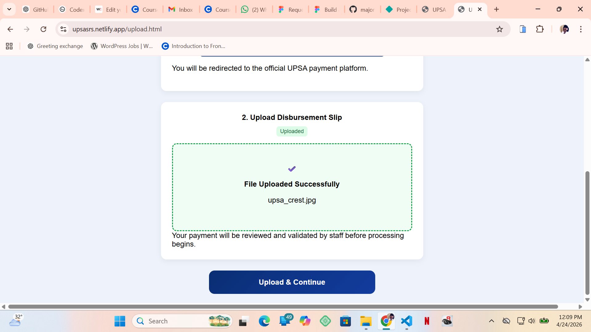
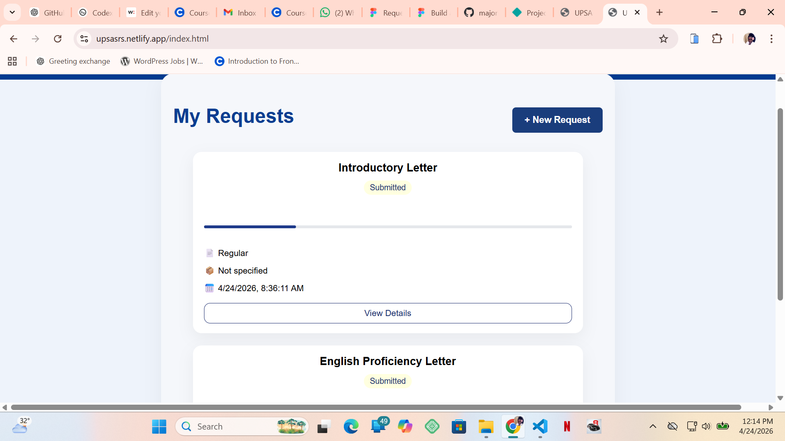
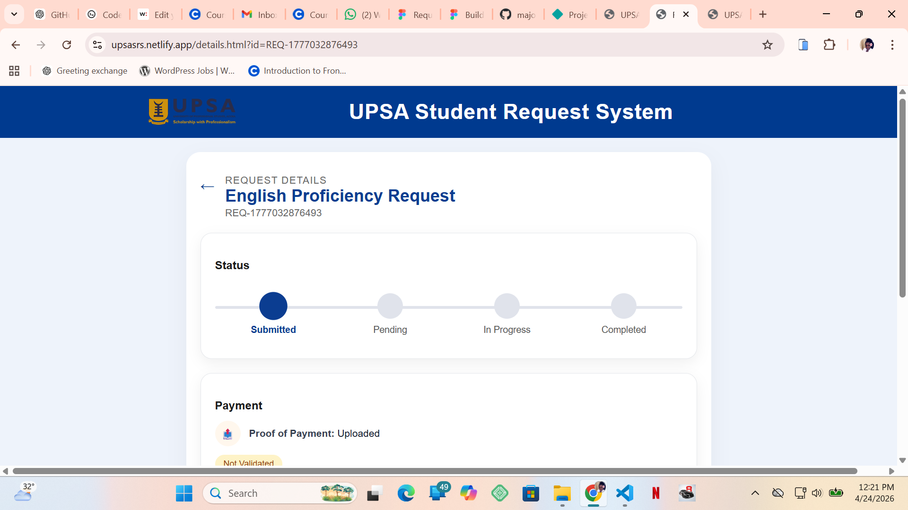
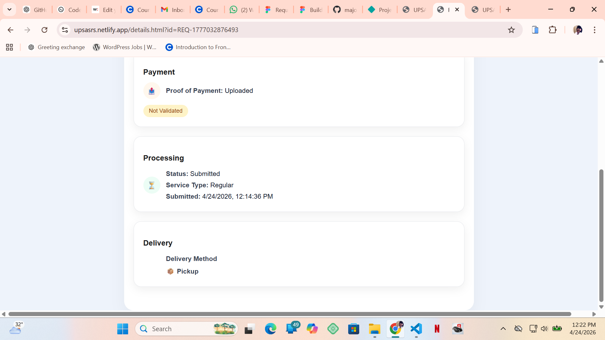

UPSA Student Request System
Digitizing fragmented student request workflows into a structured, trackable system
Product Walkthrough
Dashboard
Students can view all requests and track progress from a central dashboard.

Empty dashboard before any request is made
Guided Request Form
A multi-step form simplifies the process and improves clarity.


Step-by-step request flow
Payment & Proof Upload
Users complete payment externally and upload proof for validation.


Payment and proof upload process
Review & Submit
Users review their details before final submission.


Review and confirmation step
Post-Submission Dashboard
After submission, users can monitor progress and status updates.

Dashboard after submitting a request
Request Tracking
Detailed tracking provides visibility into each stage of processing.


Request tracking and status breakdown
Overview
A web-based system designed to digitize and streamline student service requests such as transcripts and introductory letters. It replaces manual processes with a structured, trackable workflow.
Problem
- Students lack visibility into request status
- Processes are fragmented and unclear
- Payment and submission steps are confusing
- Admins struggle with tracking and consistency
Solution
- Multi-step guided request flow
- Status tracking system
- Manual payment validation with proof upload
- Admin dashboard for processing requests
Key Design Decisions
Multi-step Form
Reduced cognitive load and improved clarity by guiding users step-by-step instead of presenting a long form.
Manual Payment Validation
Maintained alignment with existing UFIS workflows to ensure feasibility and adoption, while leaving room for future automation.
System Thinking
Request Lifecycle: Submitted → Pending → In Progress → Completed
Roles: Students (submit/track) and Admins (validate/process)
Challenges
Translating product ideas into a working system required stepping into development, handling state management, and ensuring flow consistency across pages.
Outcome
A fully functional, deployed system that improves transparency, structure, and efficiency in student request workflows.